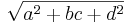
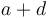

Trainable Segmentation Plugin Implementation
DEPRECATION NOTICE: This page describes the implementation of the deprecated Trainable Segmentation plugin, the previous incarnation of the Trainable Weka Segmentation plugin and library. We encourage users and developers to work with the more advanced and properly maintained Trainable Weka Segmentation instead.
This page provides a high level overview of how the deprecated Trainable Segmentation plugin (TSP) works.
Contents
Summary
The plug in creates a set of features for each input image pixel by individually applying various filters (for example, Gaussian blur) to the image. The user then selects sets of pixels in the image and assigns each set to a class (e.g. background, cells, nucleus, spores, cell membranes). The plug in builds a forest of classification trees by bootstrapping the feature data and assigned classes for the user chosen pixels. This is the classifier. The classifier can then be used to segment the trained image and other images by applying the forest to each pixel - the trees 'vote' for which class each pixel belongs to based on its features.
Features
The plugin creates a stack of images - one image for each feature. For instance, if only Gaussian Blur is selected as a feature, the classifier will be trained on the original image and four blurred images with four different  parameters for the Gaussian, so each pixel will have 5 features. If the mean is added as a feature, then each pixel will have nine features (the value of the pixel's location in the original image, four Gaussian blur images, and four mean images with different radii).
parameters for the Gaussian, so each pixel will have 5 features. If the mean is added as a feature, then each pixel will have nine features (the value of the pixel's location in the original image, four Gaussian blur images, and four mean images with different radii).
Gaussian Blur
Performs four individual convolutions with Gaussian kernels with equal to 1, 2, 4, and 8. The larger the radius the more blurred the image becomes until the pixels are homogeneous.
Sobel filter
Calculates the gradient at each pixel. Gaussian blurs with = 1, 2, 4 and 8 are performed prior to the filter.
Hessian
Calculates a Hessian matrix H at each pixel:

This is implemented as follows:
 : the X-direction sobel kernel is convolved with the image twice.
: the X-direction sobel kernel is convolved with the image twice. : the Y-direction sobel kernel is convolved with the image twice.
: the Y-direction sobel kernel is convolved with the image twice.-
 : the X and Y-direction sobel kernels are each convolved with the image once.
: the X and Y-direction sobel kernels are each convolved with the image once.
Prior to the application of any filters, a Gaussian blur with = 1, 2, 4 or 8 is performed.
The final features used for pixel classification, given the Hessian matrix  are calculated thus:
are calculated thus:
- 
- Trace: 
- Determinant:

Difference of Gaussians
Calculates two Gaussian blur images from the original image and subtracts one from the other. values are again set to 1, 2, 4, and 8, so 6 feature images are added to the stack.
Membrane projections
The initial kernel for this operation is hardcoded as a 19x19 zero matrix with the middle column entries set to 1. Multiple kernels are created by rotating the original kernel by 15 degrees up to a total rotation of 180 degrees, giving 12 kernels. Each kernel is convolved with the image and then the set of 12 images are Z-projected into a single image via 6 methods:
- sum of the pixels in each image
- mean of the pixels in each image
- standard deviation of the pixels in each image
- median of the pixels in each image
- maximum of the pixels in each image
- minimum of the pixels in each image
Each of the 6 resulting images is a feature. Hence pixels in lines of similarly valued pixels in the image that are different from the average image intensity will stand out in the Z-projections.
Mean, Variance, Median, Minimum, Maximum
The pixels within a radius of 1, 2, 4, and 8 pixels from the target pixel are subjected to the pertinent operation (mean/min etc.) and the target pixel is set to that value.
Once the selected features have been calculated for each pixel (each feature stored as a separate image) and the user has chosen sets of pixels for each class, the classifier can be trained.
Classifier
The plugin's classifier is the Fast Random Forest (FRF) algorithm, which is based on the (wait for it) Random Forest algorithm. The FRF algorithm is a re-implementation of the RF code as implemented in Weka.
The RF algorithm uses numerous (default 200) classification trees (CTs) to 'vote' for which class a pixel, with its corresponding set of features, belongs to. The algorithm builds multiple trees from the same dataset by bootstrapping (sampling with replacement).
Once the classifier is built from the user chosen pixels (with their associated feature data)/class assignments and the entire training image or a new image is staged for classification, each pixel is classified by all the trees and is assigned to the class with the highest 'vote.'